1 · Einstellungen → Verzeichnis
Das Verzeichnis Was du bisher gesehen hast
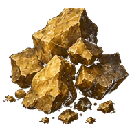
Zutaten5 / 7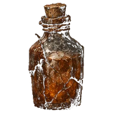
Tränke9 / 14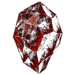
Materialien6 / 9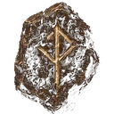
Runen4 / 8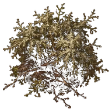
Orte4 / 6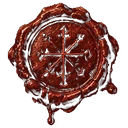
Gegner8 / 12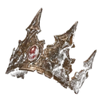
Gegenstände31 / 70 Grab-Sets1 / 5
Grab-Sets1 / 5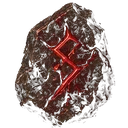
AufwertenAlle 10 Wege, ein Teil besser zu machenDas Verzeichnis füllt sich, während du spielst. Was du noch nie gesehen hast, steht nur als Lücke darin.
Wo es liegt: hinter dem Zahnrad, nicht als siebter Tab – auf dem SE passen sechs. Es ist ein Nachschlagewerk, kein Spielort.
Die Zahlen sind die halbe Miete. „5 / 7“ macht aus einer Liste eine Sammlung und sagt nebenbei, dass es noch etwas zu finden gibt – ohne zu verraten was.
2 · Zutaten
Zutaten 5 von 7
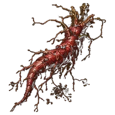
Rotwurz1Die Alte Mühle · 3 Rezepte Silberstaub1Katakomben · 4 Rezepte
Silberstaub1Katakomben · 4 Rezepte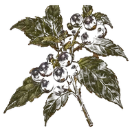
Nachtschatten2Moor der Gehenkten · 3 Rezepte Schwarzes Herz5Krypta-Bosse · 8 Rezepte
Schwarzes Herz5Krypta-Bosse · 8 Rezepte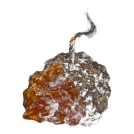
Noch unbekanntEingestürzte KapelleDas ist die einzige Stelle, die scrollt. Bisher darf das nur das Kampflog und die Werte-Ansicht. 70 Gegenstände lassen sich nicht anders zeigen – die Alternative wären Seiten zum Blättern, und die sind beim Suchen schlechter.
Unbekanntes bleibt als Lücke stehen, mit dem Ort, aber ohne Namen und Bild. So sieht man, dass die Kapelle etwas hergibt, ohne zu wissen was.
Die Zahl rechts ist dein Vorrat. Damit beantwortet die Liste schon die halbe Frage, ohne dass man irgendwo hineingeht.
3 · Ein Eintrag
Schwefel Zutat
Fällt in: Die Feuergruben (Akt VI)
15 % je Sieg, auf Elite-Gebieten doppelt. Seltener auch auf Expeditionen und beim Umherziehen.
Bei Mutter Ysolde für 86 Gold zu kaufen, 3 Stück je Tag.
Gebraucht für:
Rostsäure
Du hast 0. Ein Rezept wartet darauf.
Schwarzes Herz Zutat
Fällt bei: Krypta-Bossen und im Abgrund
70 % je Boss. Jedes Herz bringt eine Feldzutat mit. Nicht käuflich.
Gebraucht für:
FalkenaugeKnochenmarkSchattentrankJägerblickBollwerkRostsäureZaubertinteVampirsud
Du hast 5.
„Gebraucht für“ ist der eigentliche Gewinn. Das Rezept sagt dir, was ein Trank braucht. Umgekehrt zu fragen – was kann ich mit dem anfangen, was ich habe? – geht heute nirgends. Die Liste ist aus den Rezepten rückwärts gelesen, also immer richtig.
Alles auf dieser Seite ist abgeleitet. Ort aus HERB_LOC, Chance aus ALCH, Rezepte aus POTIONS, Preis aus herbPrice(). Kein einziger Satz ist abgetippt – sonst lügt er beim nächsten Balance-Wurf.
4 · Aufwerten
Aufwerten 10 Wege
Bei den Händlern
Ghulzahn, später Blutstein und Höllenasche · 20–800 Gold
5 Stufen · gehört dem Platz, nicht der Waffe
Grableinen, später Siegel und Höllenasche · 20–800 Gold
5 Stufen · gehört dem Platz
In der Schmiede
2 Material · das Material bestimmt den Bonus
höchstens 2 Runen je Teil
4 Schmiedeglut + Gold · Bonus wandert mit seiner Stufe
einmal je Teil, für immer
Umschmieden kostet Schmiedeglut des Teils
Ein Bonus bleibt bei allem Folgenden unverändert.
einer je Teil
Alle unversiegelten Boni werden neu gewürfelt.
Gleiche Boni, neue Werte und Stufen.
Ein neuer Bonus, wenn Platz ist.
Ein zufälliger unversiegelter Bonus verschwindet.
Gewürfelter Bonus, das Teil steigt magisch → selten.
einmal je Teil · nur aus dem Abgrund
Höllenasche wird von vier Dingen verlangt: Schärfen Stufe 5, Verstärken Stufe 5, „Neu würfeln“ und der Aschenrune. Du hast 3.
Zehn Wege, verteilt auf drei Händler und zwei Reiter der Schmiede. Nirgends im Spiel stehen sie zusammen – und jeder hat eine andere Grenze, von der man heute erst beim Scheitern erfährt.
Die rote Zeile ist die wichtigste. Dass Fusionieren einmal für immer ist und nur zwei Runen in ein Teil passen, entscheidet darüber, wofür man ein gutes Stück aufhebt.
Der Kasten unten ist der eigentliche Grund für die Kachel. Vier Systeme greifen nach derselben Höllenasche. Wer sie für Runen hortet, verhungert beim Schärfen – und merkt nie, warum. Das sieht man erst, wenn es nebeneinander steht.